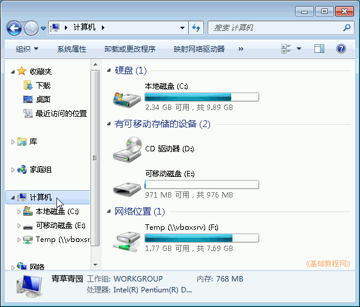
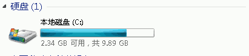
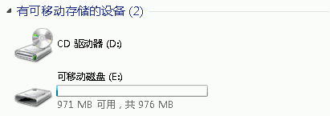
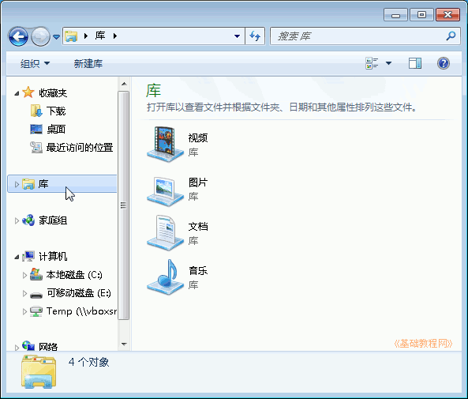
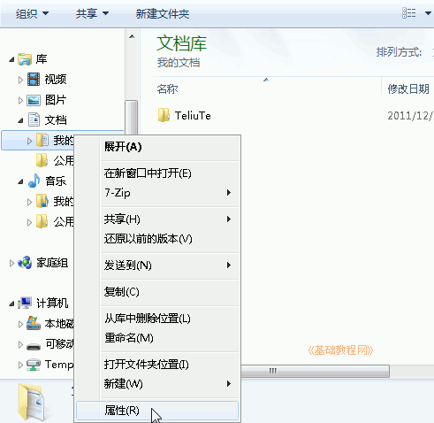
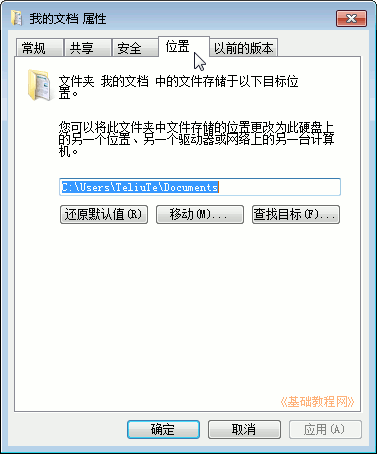

Windows7 基础入门教程
作者：TeliuTe 来源：基础教程网
二十五、磁盘和库文件夹 返回目录 下一课Windows中有磁盘、文件夹、文件，他们都有一个文件名，文件放在文件夹里，文件夹放在磁盘里；
1、磁盘分区
1）点击任务栏上的“库”文件夹图标，在左边栏中点击“计算机”；

在下面的“可移动存储设备”中，第一个就是软盘；
2）硬盘一般分成几个区，从C:盘开始，C:一般也叫系统盘，里面安装有操作系统；

3）光盘和 U 盘在“可移动存储设备”中，图标是一个光盘；

2、库文件夹
1）在文件磁盘名用字母和英文冒号组成，其中A:和B:表示软盘，现在很少用了显示库文件夹窗口；

2）点左边栏“库”的空三角折叠按钮，展开库文件夹，再展开“文档”，瞄准点右键选“属性”菜单；

3）在出来的面板上边，点“位置”标签，在中间的位置栏中，可以把默认的C:盘改成D:盘或其他盘，
其他“我的音乐”、“我的图片”等文件夹，修改方法相同；

本节学习了磁盘和库文件夹的基础知识，如果你成功地完成了练习，请继续学习下一课内容；
本教程由86团学校TeliuTe制作|著作权所有
基础教程网：>http://teliute.org/
美丽的校园……
转载和引用本站内容，请保留作者和本站链接。